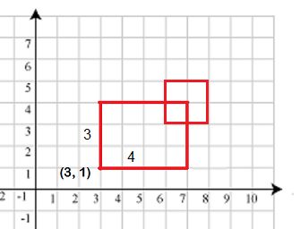

Sau khi làm xong bài tập Chiều dài phủ , Nam suy nghĩ không biết bài trên có thể mở rộng cho mặt phẳng được không? Cụ thể bài toán mở rộng như sau:
Trên mặt phẳng tọa độ có n hình chữ nhật. Mỗi hình chữ nhật được biểu diễn bởi 4 tham số là x, y, w, h (x, y, w, h ≥ 0). Trong đó (x, y) là tọa độ góc dưới bên trái của hình chữ nhật, w và h lần lượt là chiều rộng và chiều cao của hình chữ nhật. Hãy tìm tổng diện tích được phủ bởi n hình chữ nhật trên.

Dữ liệu vào:
- Dòng thứ nhất là số nguyên n (1 ≤ n ≤ 1.000) số lượng các hình chữ nhật.
- Trong n dòng tiếp theo mỗi dòng gồm 4 số nguyên x, y, w, h mỗi số cách nhau một khoảng trắng (0 ≤ x, y ≤ 105, 1 ≤ w, h ≤ 105)
Dữ liệu xuất:
- Là tổng diện tích phủ bởi các hình chữ nhật.